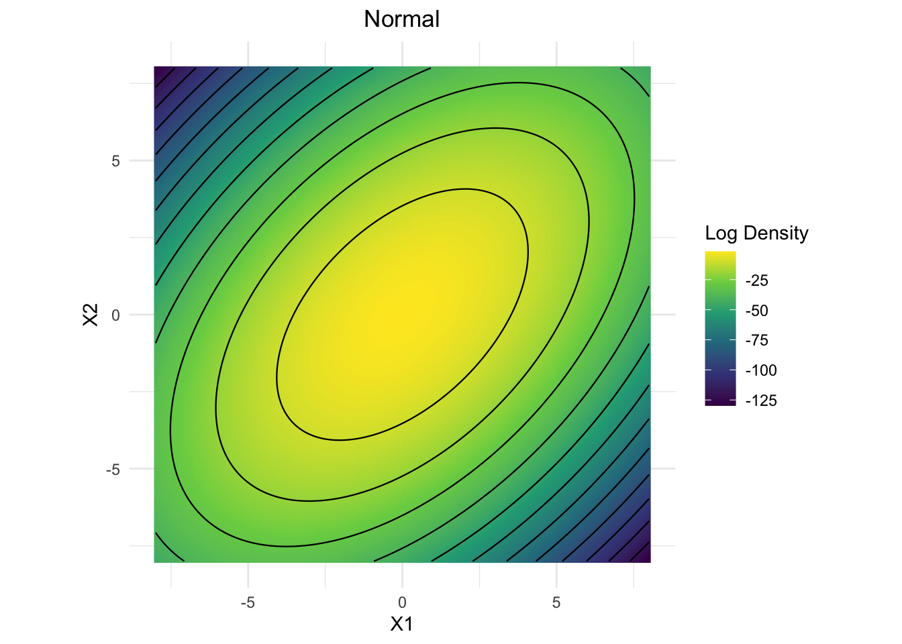
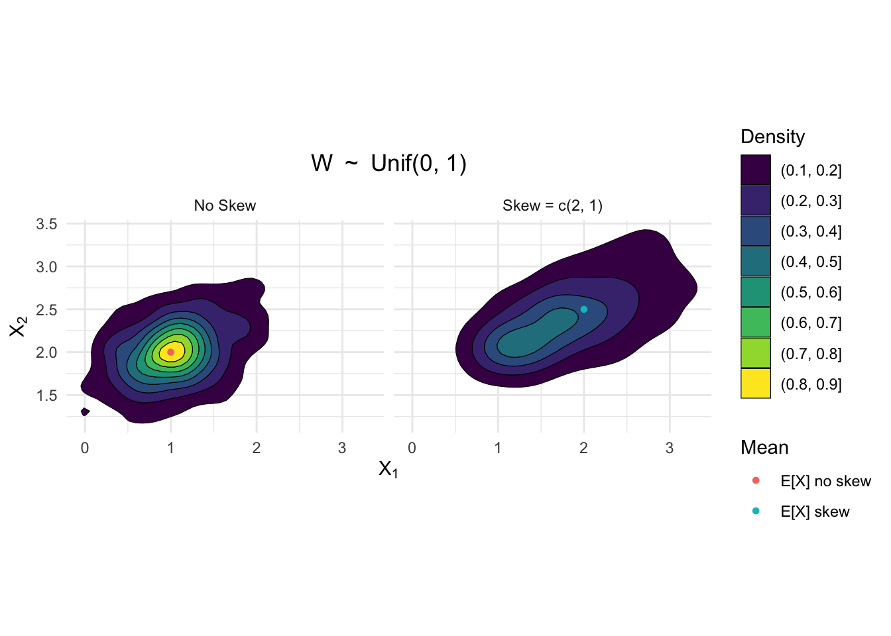
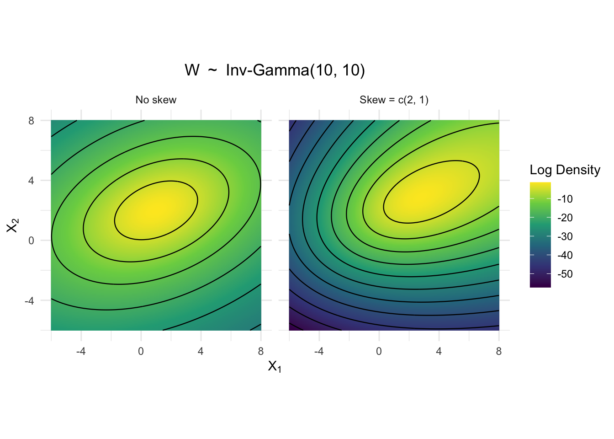
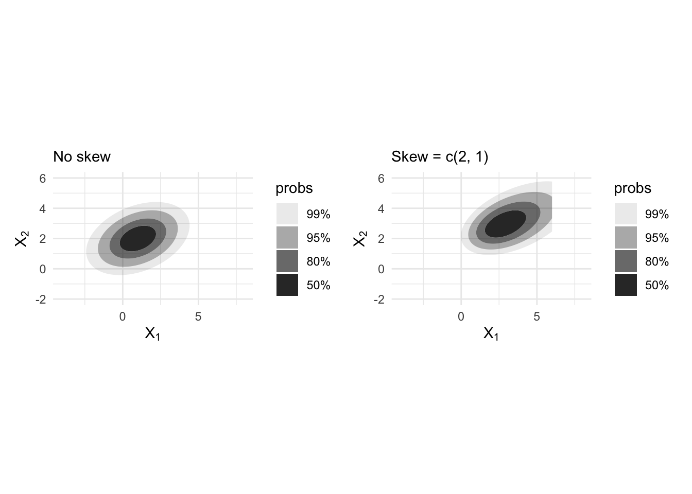
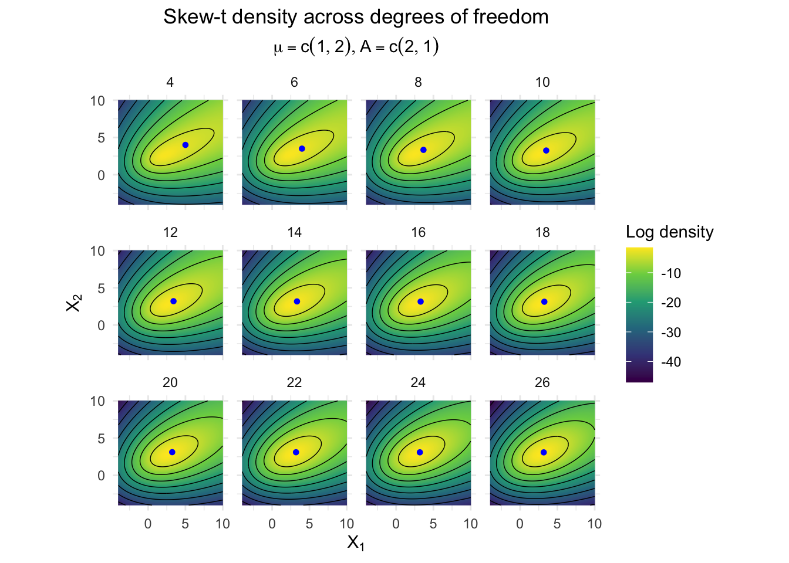
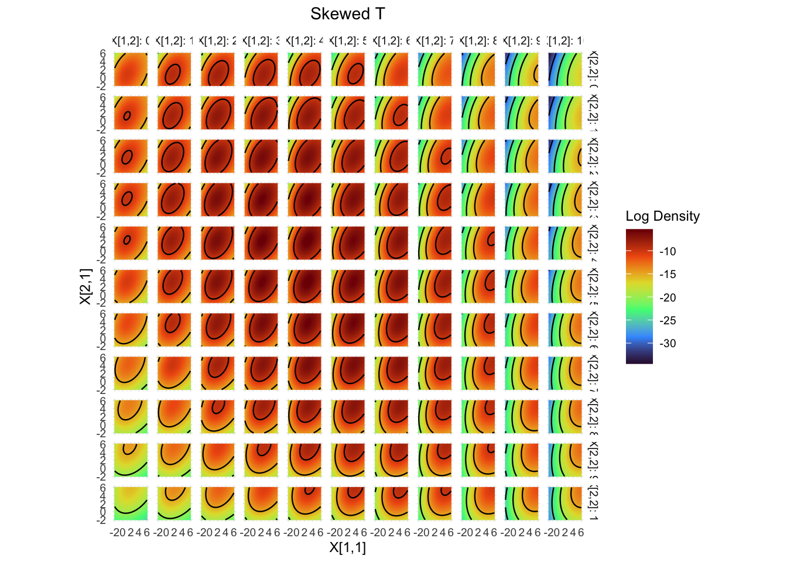
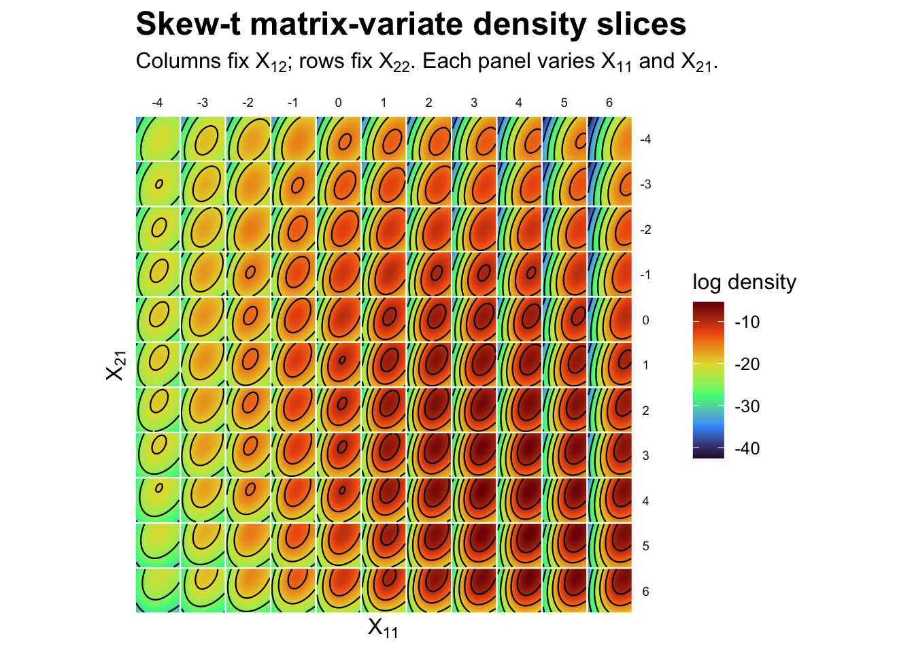
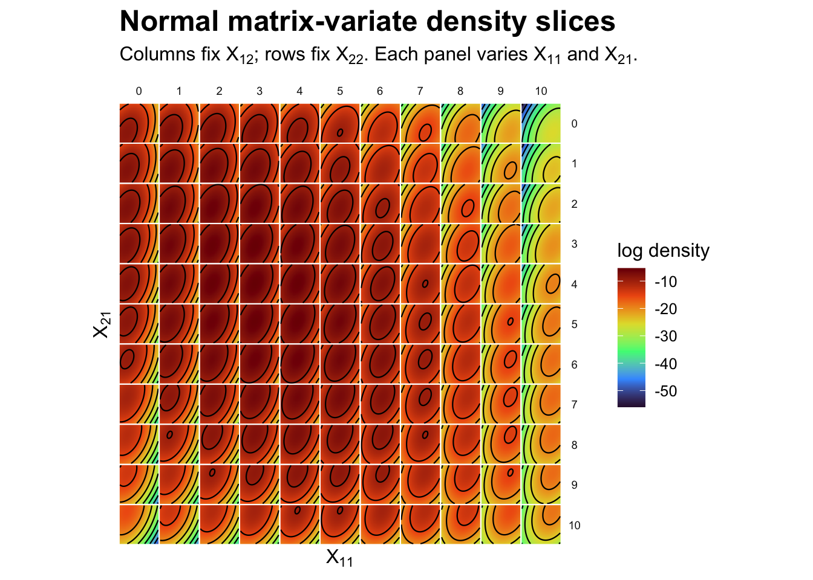
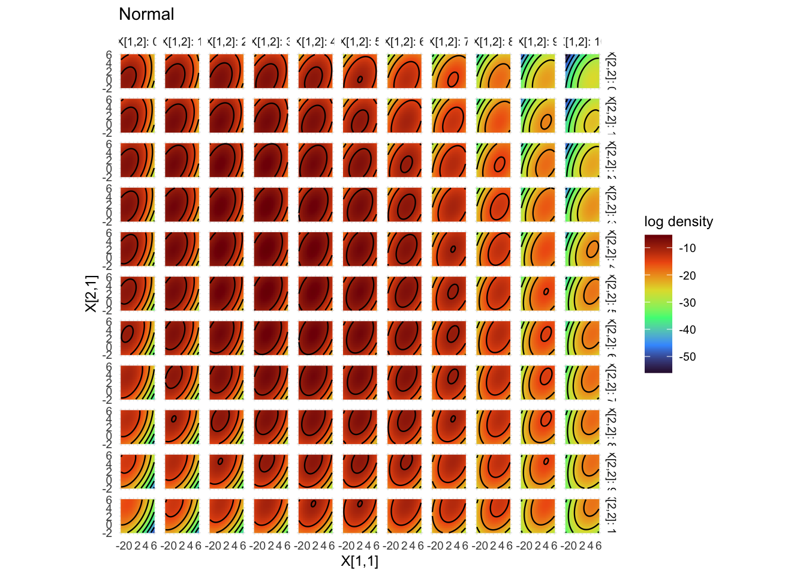
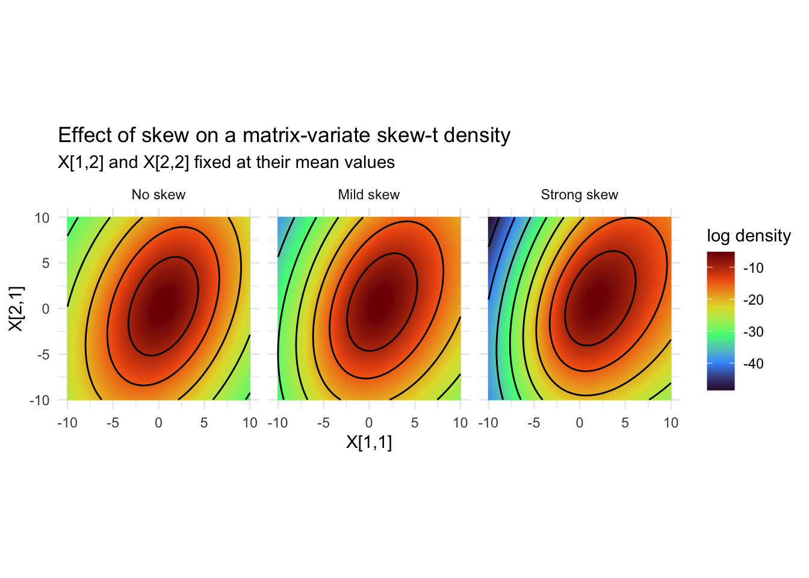

library(tensormodels)
library(tidyverse)
library(latex2exp)
library(patchwork)
library(ggdensity)
devtools::load_all(".", quiet = TRUE)
theme_update(plot.title = element_text(hjust = 0.5))normal_mean_variance_mixture
Poisson Sim for EM
The mean of \(x_{1}\) is \(\lambda_{1}\) and the mean of \(y_{1}\) is \(\beta * \lambda_{1}\). If we have all of the data, then we can compute the MLEs as
\[\hat{\beta} = \frac{\sum_{i=1}^{n} y_{i}}{\sum_{i=1}^{n} x_{i}}\]
and \[\hat{\lambda}_{i} = \frac{x_{i} + y_{i}}{\hat{\beta} + 1}.\]
n <- 20
lambdas <- 30 * runif(n = 20)
beta <- 0.2
x <- rpois(n = n, lambda = lambdas)
y <- rpois(n = n, lambda = beta * lambdas)
beta_hat <- sum(y)/sum(x)
lambdas_hat <- (x + y)/(beta_hat + 1)
sqrt(mean((lambdas_hat - lambdas)^2))[1] 2.722026Now, suppose we are missing \(x_{1}\) and still want to estimate \(\lambda_{1}\). The incomplete likelihood is now
\[L(\beta, \lambda_{1}, \lambda_{2}, \dots, \lambda_{n}|y_{1}, (x_{2}, y_{2}), \dots, (x_{n}, y_{n}) = \\ \left[\prod_{i=1}^{n} \frac{e^{-\beta \lambda_{i}} (\beta \lambda_{i}^{y_{i}})}{y_{i}!} \right] \left[\prod_{i=2}^{n} \frac{e^{-\lambda_{i}} (\lambda_{i}^{x_{i}})}{_{i}!}\right]\]
x_missing <- c(NA, x[2:n])Optim
fit_beta_lambda <- function(x, y) {
n <- length(x)
neg_loglik <- function(par) {
beta <- exp(par[1])
lambda <- exp(par[-1])
ll_y <- sum(dpois(y, lambda = beta * lambda, log = TRUE))
ll_x <- sum(dpois(x[2:n], lambda = lambda[2:n], log = TRUE))
-(ll_y + ll_x)
}
start_beta <- 1
start_lambda <- pmax(y/x, 0.1)
start_lambda[is.na(start_lambda)] <- 1
start_lambda[is.infinite(start_lambda)] <- 1
fit <- optim(par = log(c(start_beta, start_lambda)),
fn = neg_loglik, method = "BFGS", hessian = TRUE)
beta_hat <- exp(fit$par[1])
lambda_hat <- exp(fit$par[-1])
list(beta = beta_hat, lambda = lambda_hat)
}
fit_beta_lambda(x_missing, y)$beta
[1] 0.1841255
$lambda
[1] 3.777263e-06 1.773465e+01 1.520101e+01 1.435651e+01 2.280163e+01
[6] 2.955774e+01 8.445072e+00 2.280158e+01 2.955771e+01 8.445147e+00
[11] 2.533514e+01 2.280166e+01 1.097844e+01 2.364622e+01 1.773471e+01
[16] 2.533520e+00 5.911511e+00 1.942341e+01 8.445115e-01 1.689014e+01EM
fit_beta_lambda_em <- function(x, y, max_iter = 1000, tol = 1e-8) {
n <- length(x)
beta <- 1
lambda <- pmax(y/x, 0.1)
lambda[is.na(lambda)] <- 1
lambda[is.infinite(lambda)] <- 1
loglik <- function(beta, lambda) { # incomplete loglik
sum(dpois(y, lambda = beta * lambda, log = TRUE)) +
sum(dpois(x[2:n], lambda = lambda[2:n], log = TRUE))
}
loglik_vals <- numeric(max_iter)
for (iter in seq_len(max_iter)) {
beta_old <- beta
lambda_old <- lambda
# E-step
x1_hat <- lambda[1] # sufficient stat is lambda1
# M-step
beta <- sum(y) / (x1_hat + sum(x[2:n]))
lambda[1] <- (x1_hat + y[1]) / (1 + beta)
lambda[2:n] <- (x[2:n] + y[2:n]) / (1 + beta)
loglik_vals[iter] <- loglik(beta, lambda)
diff <- max(abs(c(beta, lambda) - c(beta_old, lambda_old)))
if (diff < tol) { #s top when converge
loglik_vals <- loglik_vals[seq_len(iter)]
break
}
}
list(beta = beta, lambda = lambda)
}
fit_beta_lambda_em(x_missing, y)$beta
[1] 0.184127
$lambda
[1] 4.587232e-08 1.773458e+01 1.520107e+01 1.435657e+01 2.280161e+01
[6] 2.955764e+01 8.445040e+00 2.280161e+01 2.955764e+01 8.445040e+00
[11] 2.533512e+01 2.280161e+01 1.097855e+01 2.364611e+01 1.773458e+01
[16] 2.533512e+00 5.911528e+00 1.942359e+01 8.445040e-01 1.689008e+01Plots of distributions
dtnorm
mu <- matrix(c(0, 0), nrow = 2, ncol = 1)
sigmas <- list(matrix(c(1, 0.5,
0.5, 1), nrow = 2))
eval_points <- expand_grid(x11 = seq(-8, 8, length.out = 150),
x21 = seq(-8, 8, length.out = 150))
eval_mat <- as.matrix(eval_points)
eval_dtnorm <- .make_dtnorm_evaluator(mu, sigmas, log = TRUE)
dtnorm_density <- vector("numeric", nrow(eval_points))
for(i in 1:nrow(eval_points)) {
dtnorm_density[[i]] <- eval_dtnorm(matrix(eval_mat[i,], nrow = 2))
}
norm_density <-
eval_points |>
mutate(log_density = dtnorm_density)
ggplot(norm_density, aes(x = x11, y = x21)) +
geom_raster(aes(fill = log_density)) +
geom_contour(aes(z = log_density), color = "black", linewidth = 0.4) +
scale_fill_viridis_c(option = "D") +
coord_fixed() +
labs(x = "X1", y = "X2", fill = "Log Density", title = "Normal") +
theme_minimal() +
theme(plot.title = element_text(hjust = 0.5))
Normal Mean-Variance Mixture with \(U \sim Unif(0, 1)\)
mean_mix <- function(n, mu = 0, sigmas = list(matrix(1)), skew = 1, nu = 4) {
dims <- dim(mu)
if(is.null(dims)) dims <- length(mu)
# draw tensor variate normals
tensor_norms <- rtnorm(n, mu = array(0, dim = dims), sigmas)
# generate unif
unif_draws <- runif(n = n)
mix_unif_draws <- vector("list", n)
for(i in 1:n) { # scale normals and skew by unif
mix_unif_draws[[i]] <- mu + tensor_norms[[i]] * sqrt(unif_draws[i]) +
skew * unif_draws[i]
}
mix_unif_draws
}dunifmix no skew vs skew
s1 <- matrix(c(1, 0.25, 0.25, 0.5), nrow = 2)
n <- 1e3
mix_unif_noskew <- mean_mix(n = n, mu = c(1, 2),
sigmas = list(s1), skew = c(0, 0))
pull_draw <- function(i, data) {
curr_draw <- data[[i]]
tibble(val = c(curr_draw[1], curr_draw[2]),
pos = c("x1", "x2"), draw = c(i, i))
}
noskew_draws_pos <- map_dfr(.x = 1:n, .f = pull_draw,
data = mix_unif_noskew)
mix_unif_skew <- mean_mix(n = n, mu = c(1, 2),
sigmas = list(s1), skew = c(2, 1))
skew_draws_pos <- map_dfr(.x = 1:n, .f = pull_draw,
data = mix_unif_skew)
mean_points <-
tibble(setting = c("No Skew", "Skew = c(2, 1)"),
x1 = c(1, 2), x2 = c(2, 2.5),
point = c("E[X] no skew", "E[X] skew"))
bind_rows(noskew_draws_pos |> mutate(setting = "No Skew"),
skew_draws_pos |> mutate(setting = "Skew = c(2, 1)")) |>
pivot_wider(names_from = pos, values_from = val) |>
ggplot(aes(x = x1, y = x2)) +
geom_density_2d_filled(breaks = seq(0.1, 1, by = 0.1),
color = "black", linewidth = 0.2) +
geom_point(data = mean_points,
aes(x = x1, y = x2, color = point), size = 1.2) +
facet_wrap(~setting) +
scale_fill_viridis_d(option = "D") +
coord_fixed() +
labs(x = TeX("$\\X_{1}$"),
y = TeX("$\\X_{2}$"),
fill = "Density",
color = "Mean",
title = TeX("W $\\sim$ Unif(0, 1)")) +
theme_minimal() +
theme(plot.title = element_text(hjust = 0.5))
dtskewt no skew vs skew
#
# ggplot() +
# geom_hdr_fun(fun = noskew_fun, xlim = c(-3, 5), ylim = c(-3, 6),
# probs = c(0.50, 0.75, 0.95, 0.99),
# aes(fill = factor(after_stat(probs))),
# color = "black", linewidth = 0.4, alpha = 0.6) +
# scale_fill_viridis_d(name = "HDR probability", direction = -1) +
# coord_fixed() +
# labs(x = expression(X[1]), y = expression(X[2])) +
# theme_minimal() +
# ggplot() +
# geom_hdr_fun(fun = skew_fun, xlim = c(-3, 5), ylim = c(-3, 6),
# probs = c(0.50, 0.75, 0.95, 0.99),
# aes(fill = factor(after_stat(probs))),
# color = "black", linewidth = 0.4, alpha = 0.6) +
# scale_fill_viridis_d(name = "HDR probability", direction = -1) +
# coord_fixed() +
# labs(x = expression(X[1]), y = expression(X[2])) +
# theme_minimal()
eval_points <-
expand_grid(x11 = seq(-6, 8, length.out = 300),
x21 = seq(-6, 8, length.out = 300))
multivar_noskewt <- .make_dtskewt_evaluator(mu = c(1, 2), skew = c(1e-6, 1e-6),
sigmas = list(s1), nu = 20, log = TRUE)
multivar_skewt <- .make_dtskewt_evaluator(mu = c(1, 2), skew = c(2, 1),
sigmas = list(s1), nu = 20, log = TRUE)
multivar_dtnoskewt <- vector("numeric", nrow(eval_points))
multivar_dtskewt <- vector("numeric", nrow(eval_points))
for(i in 1:nrow(eval_points)) {
multivar_dtnoskewt[[i]] <- multivar_noskewt(unlist(eval_points[i,]))
multivar_dtskewt[[i]] <- multivar_skewt(unlist(eval_points[i,]))
}
tibble(eval_points, multivar_dtnoskewt, multivar_dtskewt) |>
pivot_longer(cols = c(multivar_dtnoskewt, multivar_dtskewt)) |>
mutate(name = ifelse(name == "multivar_dtnoskewt",
"No skew", "Skew = c(2, 1)")) |>
ggplot(aes(x = x11, y = x21)) +
geom_raster(aes(fill = value)) +
geom_contour(aes(z = value), color = "black", linewidth = 0.4) +
facet_grid(~name) +
scale_fill_viridis_c(option = "D") +
coord_fixed() +
labs(x = TeX("$\\X_{1}$"),
y = TeX("$\\X_{2}$"),
fill = "Log Density",
title = TeX("W $\\sim$ Inv-Gamma(10, 10)")) +
theme_minimal() +
theme(plot.title = element_text(hjust = 0.5))
dtskewt hdr no skew vs skew
noskew_dtskewt <- .make_dtskewt_evaluator(mu = c(1, 2), skew = c(1e-6, 1e-6), sigmas = list(s1), nu = 20)
noskew_fun <- function(x, y) {
x_list <- Map(c, x, y)
noskew_dtskewt(x_list)
}
skew_dtskewt <- .make_dtskewt_evaluator(mu = c(1, 2), skew = c(2, 1), sigmas = list(s1), nu = 20)
skew_fun <- function(x, y) {
x_list <- Map(c, x, y)
skew_dtskewt(x_list)
}
ggplot() +
geom_hdr_fun(fun = noskew_fun, xlim = c(-4, 6), ylim = c(-2, 6)) +
labs(x = TeX("$\\X_{1}$"),
y = TeX("$\\X_{2}$"),
subtitle = "No skew") +
coord_fixed(xlim = c(-4, 8), ylim = c(-2, 6)) +
theme_minimal() +
ggplot() +
geom_hdr_fun(fun = skew_fun, xlim = c(-4, 6), ylim = c(-2, 6)) +
labs(x = TeX("$\\X_{1}$"),
y = TeX("$\\X_{2}$"),
subtitle = "Skew = c(2, 1)") +
coord_fixed(xlim = c(-4, 8), ylim = c(-2, 6)) +
theme_minimal()
dtskewt different nu
nu_vals <- seq(4, 26, by = 2)
mean_diff_nus <-
tibble(nu = nu_vals,
x1 = 1 + (nu)/(nu-2) * 2,
x2 = 2 + (nu)/(nu-2) * 1,
point = as.character(nu))
eval_points <-
expand_grid(x11 = seq(-4, 10, length.out = 200),
x21 = seq(-4, 10, length.out = 200))
x_list <- vector(mode = "list", length = 200*200)
for(i in 1:(200*200)) {
x_list[[i]] <- unlist(eval_points[i,])
}
skewt_density <-
tibble(nu = nu_vals) |>
rowwise() |>
mutate(eval_dtskewt =
list(.make_dtskewt_evaluator(mu = c(1, 2), sigmas = list(s1),
skew = c(2, 1), nu = nu, log = TRUE))) |>
mutate(density_grid = list(mutate(eval_points, nu = nu,
log_density = eval_dtskewt(x_list)))) |>
ungroup() |>
select(density_grid) |>
unnest(density_grid) |>
mutate(nu = factor(nu, levels = nu_vals))
ggplot(skewt_density, aes(x = x11, y = x21)) +
geom_raster(aes(fill = log_density), interpolate = TRUE) +
geom_contour(aes(z = log_density), color = "black", linewidth = 0.25) +
geom_point(data = mean_diff_nus,
aes(x = x1, y = x2), size = 1.2, color = "blue") +
facet_wrap(~nu, ncol = 4) +
scale_fill_viridis_c(option = "D") +
coord_fixed() +
labs(x = TeX("$\\X_{1}$"),
y = TeX("$\\X_{2}$"),
fill = "Log density",
title = "Skew-t density across degrees of freedom",
subtitle = TeX("$\\mu = c(1, 2), A = c(2, 1)$")) +
theme_minimal() +
theme(plot.title = element_text(hjust = 0.5),
plot.subtitle = element_text(hjust = 0.5))Warning: Combining variables of class <factor> and <numeric> was deprecated in ggplot2
3.4.0.
ℹ Please ensure your variables are compatible before plotting (location:
`combine_vars()`)Warning: Combining variables of class <numeric> and <factor> was deprecated in ggplot2
3.4.0.
ℹ Please ensure your variables are compatible before plotting (location:
`combine_vars()`)
dtskewt matrix variate
mu <- matrix(c(1, 2,
3, 4), nrow = 2)
skew <- matrix(c(2, 1,
1, 0.5), nrow = 2)
s1 <- matrix(c(1, 0.5, 0.5, 2), nrow = 2)
s2 <- matrix(c(2, 1, 1, 2), nrow = 2)
eval_points <-
expand_grid(x11 = seq(-2, 6, length.out = 40),
x21 = seq(-2, 6, length.out = 40),
x12 = 0:10, x22 = 0:10)
eval_matrix <- as.matrix(eval_points)
dtskewt_density <- vector("numeric", nrow(eval_points))
eval_dtskewt <- .make_dtskewt_evaluator(mu, skew, sigmas = list(s1, s2),
nu = 20, log = TRUE)
for(i in 1:nrow(eval_points)) {
dtskewt_density[[i]] <- eval_dtskewt(matrix(eval_matrix[i,], nrow = 2))
}
mat_skewt_density <-
eval_points |>
mutate(log_density = dtskewt_density)
mat_skewt_density |>
mutate(x12_lab = factor(round(x12, 2),
levels = sort(unique(round(x12, 2)))),
x22_lab = factor(round(x22, 2),
levels = sort(unique(round(x22, 2))))) |>
ggplot(aes(x = x11, y = x21)) +
geom_raster(aes(fill = log_density)) +
geom_contour(aes(z = log_density), color = "black") +
facet_grid(rows = vars(`X[2,2]` = x22_lab),
cols = vars(`X[1,2]` = x12_lab),
labeller = label_both) +
scale_fill_viridis_c(option = "H") +
coord_fixed() +
labs(x = "X[1,1]", y = "X[2,1]",
fill = "Log Density",
title = "Skewed T") +
theme_minimal(base_size = 9) +
theme(plot.title = element_text(hjust = 0.5))
plot_density(x12 = seq(-4, 6, by = 1),
x22 = seq(-4, 6, by = 1),
x11 = seq(-6, 6, length.out = 50),
x21 = seq(-6, 6, length.out = 50),
mu = mu, sigmas = list(s1, s2),
model = "skewt", skew = skew, nu = 20)
dtnorm matrix variate
plot_density(x12 = seq(0, 10, by = 1),
x22 = seq(0, 10, by = 1),
x11 = seq(-2, 6, length.out = 50),
x21 = seq(-2, 6, length.out = 50),
mu = mu, sigmas = list(s1, s2),
model = "normal")
dtnorm_density <- vector("numeric", nrow(eval_points))
eval_matnorm <- .make_dtnorm_evaluator(mu, sigmas = list(s1, s2), log = TRUE)
for(i in 1:nrow(eval_points)) {
dtnorm_density[[i]] <- eval_matnorm(matrix(eval_matrix[i,], nrow = 2))
}
mat_normal_density <-
eval_points |>
mutate(log_density = dtnorm_density)
mat_normal_density |>
mutate(x12_lab = factor(round(x12, 2),
levels = sort(unique(round(x12, 2)))),
x22_lab = factor(round(x22, 2),
levels = sort(unique(round(x22, 2))))) |>
ggplot(aes(x = x11, y = x21)) +
geom_raster(aes(fill = log_density)) +
geom_contour(aes(z = log_density), color = "black") +
facet_grid(rows = vars(`X[2,2]` = x22_lab),
cols = vars(`X[1,2]` = x12_lab),
labeller = label_both) +
scale_fill_viridis_c(option = "H") +
coord_fixed() +
labs(x = "X[1,1]", y = "X[2,1]",
fill = "log density",
title = "Normal") +
theme_minimal(base_size = 9)
dtskewt multivar for different skew
mu <- matrix(c(0.5, 0.25, 0.25, 0.5), nrow = 2)
skew_settings <- tibble(
skew_name = c("No skew", "Mild skew", "Strong skew"),
skew = list(matrix(c(1e-6, 1e-6, 1e-6, 1e-6), nrow = 2),
matrix(c(1, 0.5, 0.5, 0.25), nrow = 2),
matrix(c(2, 1, 1, 0.5), nrow = 2)))
eval_points_2d <- expand_grid(x11 = seq(-10, 10, length.out = 200),
x21 = seq(-10, 10, length.out = 200))
density_compare <-
skew_settings |>
mutate(skew_name = factor(skew_name, levels = c("No skew", "Mild skew", "Strong skew")),
dtskewt_eval = lapply(skew, function(curr_skew) {
.make_dtskewt_evaluator(mu = mu, skew = curr_skew, sigmas = list(s1, s2),
nu = 20, log = TRUE)
})) |>
crossing(eval_points_2d) |>
group_by(skew_name) |>
mutate(log_density = {
f <- dtskewt_eval[[1]]
x_list <- lapply(seq_len(n()), function(i) {
matrix(c(x11[i], x21[i],
mu[1, 2], mu[2, 2]), nrow = 2)
})
f(x_list)
}) |>
ungroup() |>
select(-dtskewt_eval)
ggplot(density_compare, aes(x = x11, y = x21)) +
geom_raster(aes(fill = log_density)) +
geom_contour(aes(z = log_density), color = "black") +
facet_wrap(~skew_name, nrow = 1) +
scale_fill_viridis_c(option = "H") +
coord_fixed() +
labs(
x = "X[1,1]",
y = "X[2,1]",
fill = "log density",
title = "Effect of skew on a matrix-variate skew-t density",
subtitle = "X[1,2] and X[2,2] fixed at their mean values"
) +
theme_minimal()